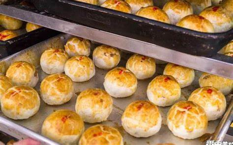
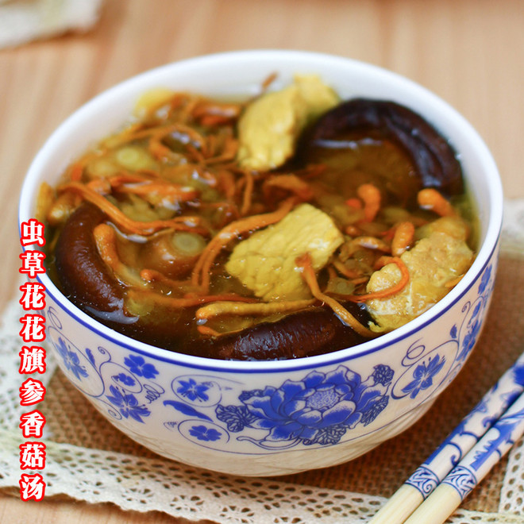

番禺美食地图
沙湾姜撞奶
番禺沙湾镇传统甜品，已有百年历史。选用本地小黄姜和新鲜水牛奶制作，口感滑嫩，甜中带辣，暖胃又养生。
甜品
非遗

番禺猪杂粥
选用新鲜猪杂，配以香米熬制数小时。粥底绵滑，猪杂爽脆，是番禺人最爱的早餐之一，尤其适合冬日暖身。
早餐
传统

石楼禾虫
番禺石楼镇特产，禾虫生长在咸淡水交界的稻田中，富含蛋白质，可煎蛋、蒸蛋或煲粥，味道鲜美独特。而禾虫蒸蛋、酥炸禾虫、禾虫汤等等也都滋味十足。
特产
时令
番禺美食图鉴
番禺早茶点心
珠江清蒸鱼

番禺嫁女饼

岭南老火汤
番禺文化瑰宝
沙湾飘色
番禺沙湾镇传统民间艺术，已有300多年历史。表演时由儿童扮成各种故事人物，站在精心制作的"色柜"上巡游，色彩艳丽，造型生动，是岭南民间艺术的瑰宝。
非物质文化遗产岭南园林艺术
番禺保存有众多岭南特色园林，如余荫山房、宝墨园等。这些园林融合了岭南建筑特色与江南园林艺术，小巧精致，布局巧妙，展现了岭南人高超的建筑智慧。
建筑艺术粤剧文化
作为粤剧发源地之一，番禺有着深厚的粤剧文化底蕴。每逢节庆，民间粤剧表演络绎不绝。番禺还出过多位粤剧名家，是了解岭南戏曲文化的重要窗口。
传统戏曲番禺的现代魅力
番禺不仅保留着丰富的传统文化，同时也是一座充满现代活力的城区。广州南站作为亚洲最大的高铁站之一，连接着番禺与全国各地；长隆旅游度假区每年吸引数百万游客，成为广州旅游的名片；万博商务区高楼林立，是广州南部的商业中心。
我最喜欢番禺的一点是它完美融合了传统与现代。你可以在上午参观百年古村，下午逛大型购物中心；白天品味传统美食，晚上欣赏现代演出。这种多元共生的城市气质，正是番禺最独特的魅力所在。
作为一个番禺人，我深感自豪。这里既有深厚的历史底蕴，又有开放包容的城市精神；既有慢生活的闲适，又有快节奏的活力。无论离开多久，那熟悉的乡音、那独特的味道，总能唤起我最温暖的记忆。